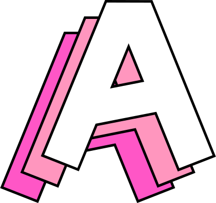

Web Developer, Sponge, Entertainer by accident
Originally from Frankfurt am Main, I moved to Amsterdam 5 years ago and since then enjoy the wonderful
Melange of dreamy canal-views, Dutch boldness and the unconditional greatfulness once being served a
drink.
My professional journey took me from working as in-house Digital Marketing Manager for brands Paul
Mitchell and adidas
to eventually moving into a Web Developer role, currently at Digital Agency Your Majesty. I also studied
at Digital
School Hyper Island, an experience that strongly coined my attitude towards work, team-building and
self-development.
I'd like to see myself as 'Sponge-shaped-individual', as I enjoy diving into new fields of knowledge,
exploring other
people's point of views and getting new perspectives. This mind-set has not only enabled me to learn a
new profession
but also leads to a constant curiousness towards the world and people around me.
Work experience
- Dec 2017 - now | Junior Web Developer at Your Majesty
- Sep 2017 - Nov 2017 | Web Development Intern at Your Majesty
- Aug 2014 - Mar 2017 | Global Digital Marketing Manager at adidas
- Aug 2010 - Nov 2013 | Digital Marketing & Social Media at Paul Mitchell Haircare
Education
- 2017 | JavaScript Coding Bootcamp at New York Code & Design Academy
- 2017 | Certified Scrum Product Owner (CSPO)
- 2014 - 2015 | Digital Media Management MA at Hyper Island
- 2007 - 2010 | Digital Media Management BA at Hochschule RheinMain
Technology is a tool to build a solution to a problem. Technology is not the the solution.
In my job as web-developer this paradigm sits at the heart of what I do. I have learnt that
there are many technical ways to solve a specific problem, but properly understanding the problem should
always go first.
When building web-applications or services, I mainly work with JavaScript and JavaScript libraries. My
past work
has stretched across back-end and front-end, including modelling, building and integration of headless
Content Management
Systems.
Below I listed some frameworks and libraries I regularily work with.
Front-End
- React
- ES6 JavaScript
- CSS, SASS, Styled Components
Back-End
Databases and CMS
- Contentful with GraphQL
- Contentful with REST API
- MongoDB with Mongoose
Nothing gives me more energy than transforming a room of question-marks into a room of
exclamation-marks.
What I love most about the web-development community is a general openness to share knowledge and to
stand 'on the shoulder of giants'. I enjoy a lot to contribute to this and therefore
like giving talks, workshops or classes.
Being a self-taught web-developer, my strength as speaker sits around explaning technical topics in an
entertaining and understandable way.
Past engagements
- 2018 | Technology Mentor & Speaker Hyper Island Digital Media Creatives Class - 'Introduction
into Technology'
- 2018 | Speaker Girl Code Meetup - 'React for Dummies'
- 2018 | Speaker Contentful Developer Meetup - '3 Tips on How to Get Started With Contentful and
GraphQL'
- 2018 | Speaker Creative Coding Days - 'How to finally prioritise what to learn next'
- 2018 | Mentor & Speaker Your Majesty - 'How to create your personal development plan & follow
up with it'
The first non-awkward Tech-Meetup
If you like Pizza, you will never starve in Amsterdam. Each day a week there is a Tech-Meetup that gives
away this greasy deliciousness alongside a wide selection of Nerd-talks. I saw an opportunity to do something new.
I wanted to create a Tech-Meetup that is inclusive for any sort of experience level and where people can
ask all the 'dumb' questions they are normally afraid of. I decided to create the 'first non-awkward
Tech-Meetup',
and Cafe Robot was born.
Cafe Robot exists since early 2018 and is a community for newbie-developers and code-hobbyists in Amsterdam. We usually meet once a
month to discuss ideas and questions and to have 1-3 drinks. If you want to stay in touch, sign up for
our newsletter
and check out our page for more info.
Responsible for the data processing of this website in accordance with the EU General Data Protection Regulation is:
Valerie Fuchs
Nieuwe Herengracht 121
Amsterdam
hi[at]valerie-fuchs[dot]de
When visiting my page, my hosting provider Strato is collecting your IP address, anonymises it and then stores it in so called log files.
All IP addresses will be stored for a maximum of seven days in order to detect and defend against attacks.
No jumping into the pool.